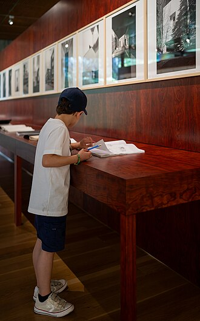
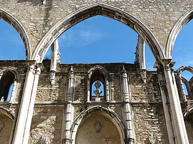
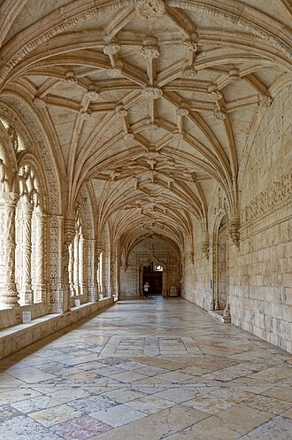
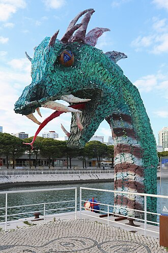
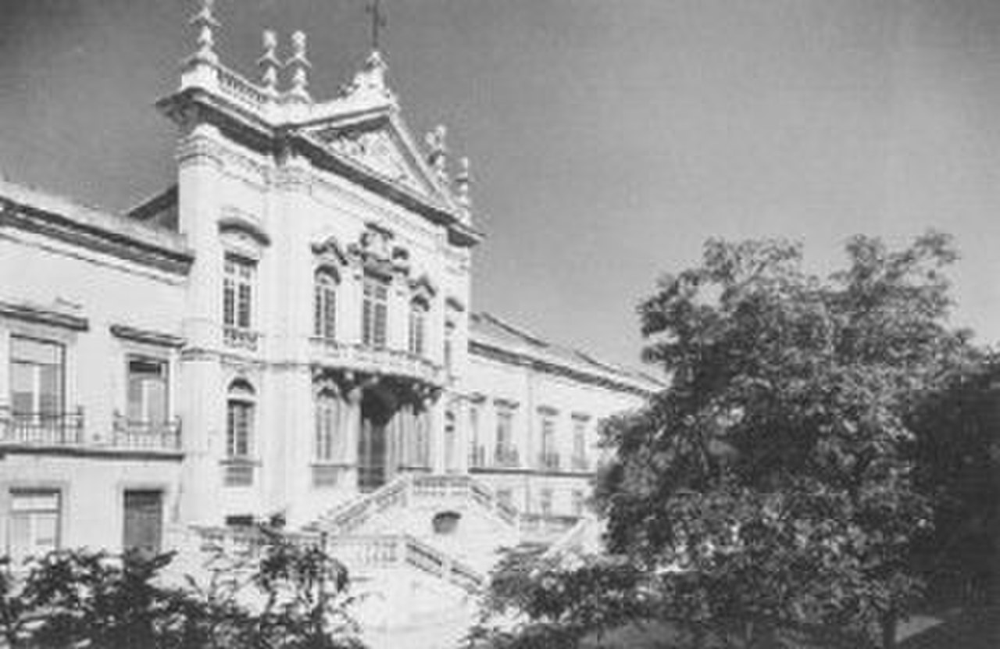

Исторические и справочные гербы


Lisbon
Путеводитель. Объектов в этом выпуске: 31.
OTIUM — практика нарочитого досуга. В античном смысле otium — не побег от работы, а время, когда внимание возвращается к памяти, пейзажу и мысли — без прикладного дедлайна.
Мы выстраиваем маршруты для неспешного присутствия, а не для чек-листа достопримечательностей: важно быть в месте, а не «потреблять» виды.
OTIUM — не туроператор. Это приглашение пройтись, остановиться и оставить маршрут незавершённым, если свет на фасаде заслуживает ещё минуты.
Исторические и справочные гербы
Путеводитель. Объектов в этом выпуске: 31.
Лиссабон — столица Португалии, порт на Атлантике у устья Тежу.
Финикийские и римские корни, эпоха Великих географических открытий и землетрясение 1755 года сформировали Помбалинский центр и трамваи на крутых улицах. Фаду, азулежу и колониальное наследие — часть идентичности города.
Землетрясение и Помбал перестроили центр; колониальное прошлое сменилось революцией гвоздик 1974 года и вступлением в ЕС. Лиссабон развивает технологии и туризм, сохраняя фаду, трамваи и память о мореплавании.


Набережный бастион и церемониальные ворота в гавань Лиссабона, украшенные мануэлинскими мотивами веревок и королевскими щитами. Объект Всемирного наследия ЮНЕСКО в составе ансамбля с близлежащим монастырем Жеронимош. Спиральная лестница на террасу может быть очень многолюдной до полудня.
Построенный из известняка лиоза в рамках программы береговой обороны и престижа короля Мануэла I. Изображение эпохи открытий Португалии.




Лифт Санта-Жушта выходит почти прямо к воротам. Интерпретационные панели об землетрясениях выстроились вдоль латеральных часовен. Сейсмический толчок 1755 года разрушил своды; эстетика романтических руин привлекала посетителей XIX века. Физическое напоминание о сейсмической уязвимости Лиссабона.





Монастырь Херонимитов, финансировавшийся за счет богатств спецовой торговли, где хранятся гробница Васко да Гамы и филигранный каменный монастырский двор. Очереди за пастель де ната в Antiga Confeitaria de Belém находятся в небольшой пешей доступности к востоку. Нартекс церкви — свободный вход; сектора монастыря и музея требуют входной платы.
Связанный с возвращением да Гамы после его первого путешествия в Индию, этот комплекс стал государственным пантеоном мореплавателей. Вершина португальской готики в резьбе.


Уличное искусство, дизайнерские магазины и бары на крышах, расположенные на территории бывшего текстильного фабричного двора под мостом. Воскресные рынки добавляют фудтраки во внутренний двор книжного магазина. Вечером очереди на Uber резко увеличиваются после концертов в «Бридж Арене».
Набережная Лиссабона в постпромышленном стиле привлекла креативщиков до крупных отельных сетей. Альтернативная торговая артерия к западу от Белена.

Современное искусство и технологии у реки с прогулочными дорожками к мосту Понте 25 де Абриль. Закат отражается на черном зеркальном облицовании. Составные билеты иногда включают Центральный Тежу, который находится рядом.
Сосед Энергетической станции EPAL договорился об общих общественных эспланадах. Современное крыло Белен за монастырную ось.


Блошиный рынок Фейра да Ладре проходит вокруг площади по вторникам. Ветер на террасе может быть сильным над крышами Альфамы. Незаконченная церковь превратилась в светский пантеон национальных героев. С высоты «плиточной четверти» открывается панорама 360°.

Кафе находится в клуатре бывшего монастыря. Автобус соединит быстрее, чем прогулка от станции Санта-Аполония. Церковь Мадре-де-Дэус была включена в национальную коллекцию азулежу. Лучшая одноместная выставка португальской плиточной росписи.


Памятник открытий (португальское название: Padrão dos Descobrimentos, португальское произношение: [pɐˈðɾɐ̃w duʒ ðɨʃkuβɾiˈmẽtuʃ]) — монумент на северном берегу устья реки Тежу, в гражданском приходе Санта-Мария-де-Белен, Лиссабон. Расположенный вдоль реки в месте, откуда отправлялись корабли для исследований и торговли с Индией и Востоком, этот памятник отмечает эпоху португальских открытий (или «эпоху исследований») в XV и XVI веках.


Парк Эдварда VII (португальское название: Parque Eduardo VII) — это общественный парк в Лиссабоне, Португалия. Парк занимает площадь в 26 гектаров (64 акра) к северу от Авенида да Либераде и площади Маркиза де Помбаля в центре Лиссабона. Парк назван в честь короля Эдуарда VII Великобритании, который посетил Португалию в 1903 году для укрепления отношений между двумя странами и подтверждения англо-португальского альянса.

Жёлтая аркадная площадь, открывающаяся на Тажо, обрамлённая правительственными корпусами и триумфальной аркой Руа Аугушта. Конная статуя Иосифа I является центральной точкой на набережной. Трамваи в Алфаме огибают северную сторону площади.
Заменил королевский дворец, разрушенный землетрясением 1755 года, и служит церемониальным городским речным воротами. Основная фестивальная площадка и туристический информационный центр.


Центральная площадь с барочными фонтанами, театром и вестибюлем станции, откуда отправляются поезда в Синтру. Традиция писателей кафе «Никола» по-прежнему привлекает журналистов. Лифт Гла́рия поднимается в Байру-Альту на западном краю.
Инквизиционные аутодафе уступили место гражданским фестивалям и кафе-культуре. Основная точка сбора между Байша и районами ночной жизни.

Вертикальная железная связь между нижней решеткой Байши и смотровыми площадками Кармо, где в загруженные дни все еще используются оригинальные вагоны. Билеты на висту на вершине могут потребовать дополнительной очереди, помимо оплаты проезда на подъемнике. Ночное освещение подчеркивает ребристую неоготическую резьбу.
Лифт изначально был приводим в действие паром; электрификация позволила интегрировать его в брендинг городского транспорта Carris. Фотогеничная точка для селфи среди индустриального наследия, расположенная между районами, сетчатой застройки и холмов.

Крепости на холме с зубцами, откуда открывается вид на терракотовые крыши, круизные лайнеры на реке Тахо и павлинов в садах. Археологические траншеи выявляют слои Железного века и Римского периода внутри стен. Пик вечерней толпы на восточных зубцах.
Мавританская цитадель стала королевским дворцом; нынешние руины в значительной степени средневековые и включают восстановленные элементы XX века. Компасная роза для понимания расположения Лиссабона на семи холмах.


Деревянные и латунные трамваи с визгом скользят по изгибам Алфамы мимо мирадуров и подходов к соборам. Карманники нацеливаются на переполненные летние аттракционы. Раннее утро предлагает более спокойные условия для фотографии, чем дневная суматоха.
Электрические линии заменили фуникулеры на некоторых холмах, сохранив узкую колею. Послание с открытки из самых крутых исторических кварталов.

Акведук Агуас Ливрес — исторический акведук в Лиссабоне, Португалия.